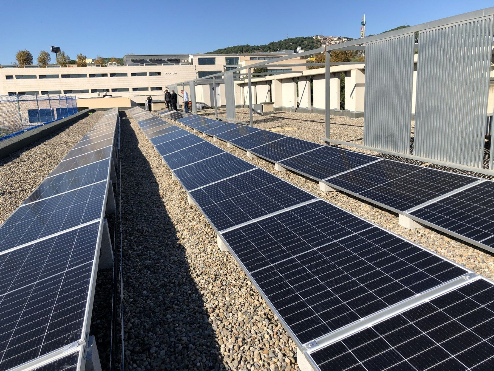
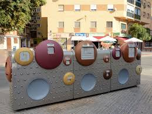
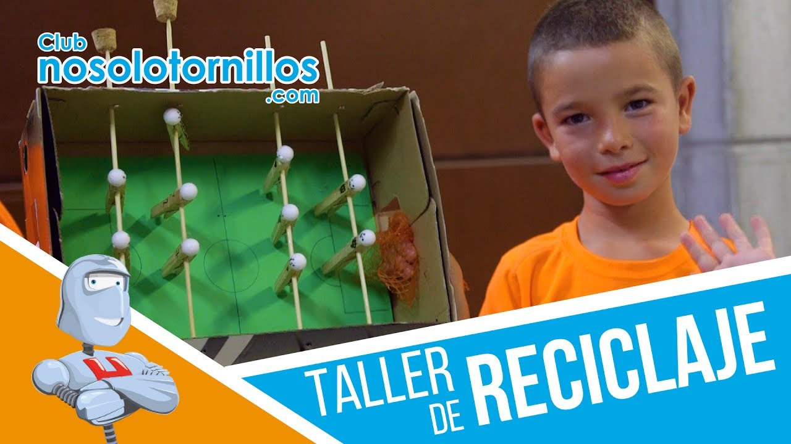
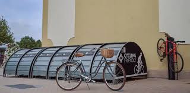
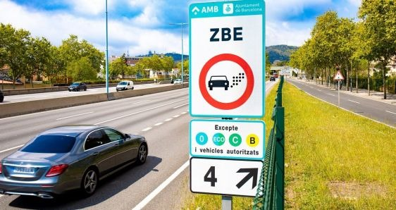

El Ayuntamiento de Cerdanyola ha implementado una serie de medidas medioambientales con el objetivo de promover la sostenibilidad, mejorar la calidad de vida de sus ciudadanos y reducir el impacto ambiental. Estas acciones abarcan varias áreas clave como la energía, el reciclaje, la educación, el transporte y el control de emisiones.
El Ayuntamiento ha impulsado la instalación de paneles solares en edificios públicos y la utilización de aerogeneradores en áreas específicas para generar energía limpia. Estas iniciativas ayudan a reducir la dependencia de fuentes de energía no renovables y contribuyen a la disminución de la huella de carbono.
Se han creado diversos puntos de reciclaje distribuidos por toda la ciudad, facilitando a los ciudadanos la correcta separación de residuos. Estos puntos están destinados a la recogida selectiva de plásticos, vidrio, papel y cartón, entre otros materiales reciclables.
En las escuelas locales se han implementado programas educativos sobre el cuidado del medio ambiente, el reciclaje y la sostenibilidad. Estos programas buscan sensibilizar a los jóvenes y fomentar hábitos responsables desde temprana edad.
El Ayuntamiento fomenta el uso del transporte público y de medios de transporte no contaminantes, como las bicicletas. Se han instalado estaciones de bicicletas públicas y se han mejorado las conexiones de transporte para hacer más accesible y cómodo el uso de estos medios de transporte sostenibles.
Se han establecido regulaciones más estrictas para reducir las emisiones de gases contaminantes en la ciudad. Esto incluye la limitación del uso de vehículos contaminantes en ciertas zonas y la promoción de vehículos eléctricos.
